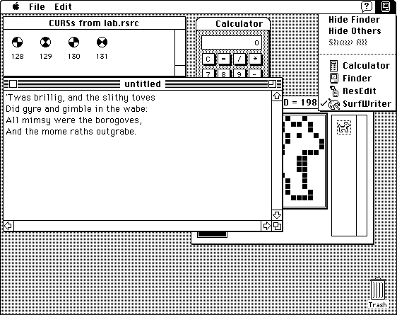

The Cooperative Multitasking Environment
The Macintosh Operating System, the Finder, and several other system software components work together to provide a multitasking environment in which a user can have multiple applications open at once and can switch between open applications as desired. To run in this environment, however, your application must follow certain rules governing its use of the available system resources.For example, your application should include a
'SIZE'resource that specifies how large a memory partition it should be allocated at application launch time. If that much memory is available when your application is launched, the Process Manager allocates it and sets up your application partition. Similarly, your application should periodically make an event call to allow the Operating System the opportunity to schedule other applications for execution. Because the smooth operation of all applications depends on their cooperation, this environment is known as a cooperative multitasking environment.The Operating System schedules the processing of all applications and desk accessories. When a user opens a document or application, the Operating System loads the application code into memory and schedules the application to run at the next available opportunity, usually when the current process or application relinquishes the CPU. In most cases, the application runs immediately (or so it appears to the user).
- Note
- The cooperative multitasking environment is available in system software versions 7.0 and later, and when the MultiFinder option is enabled in earlier system software versions. ·
The CPU is available only to the current application, whether it is running in the foreground or the background. The application can be interrupted only by hardware interrupts, which are transparent to the application. However, to give processing time to background applications and to allow the user to interact with your application and others, you must periodically call the Event Manager's
WaitNextEventorEventAvailfunction to allow your application to relinquish control of the CPU for short periods. By using these event routines in your application, you allow the user to interact not only with your application, but also with other applications.Although a number of documents and applications can be open at the same time, only one application is the active application. The active application is the application currently interacting with the user; its icon appears in the right side of the menu bar. The active application displays its menu bar and is responsible for highlighting the controls of its frontmost window. In Figure 1-1, SurfWriter is the active application. Windows of other applications are visible on the desktop behind the frontmost window.
Figure 1-1 The desktop with several applications open

Most processing in the cooperative multitasking environment is done by applications or desk accessories. Occasionally, you might need to install a task to be executed in response to an interrupt. In general, however, it is best to avoid installing interrupt tasks if at all possible. Interrupt tasks must be small and fast, and they are subject to a number of limitations that do not apply to applications. The Operating System itself is heavily interrupt-driven, and you can severely impair the responsiveness of the computer by installing too many tasks or tasks that take too long to complete.